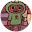

Julia mendes
Gnt, eu sei que é e irônico mais eu comecei a assistir essa série quando tinha 6 anos de idade,
junto com o meu irmão(que agora tem trauma da palavra demogorgon kskskks) e desde de pequena amo
essa série do fundo do meu coração e amo os efeitos especiais são perfeitos e os atores
então💖.É muito bem colocado os resto da vida dos personagem que n é só base do terror e de
derrotar monstros, um dos meus casais prediletos também Nancy e Jonathan tem uma história linda
e um trauma em comum tornando-se ainda melhores como casal. Está série trás também muito terror
através do movimento da câmera quando gravam, pois traz uma sensação muito boa e parece que você
está dentro do da seire.
Se você ainda não viu, POR RUDO QUE É MAIS SAGRADO NO MUNDO VEJA!!!!
Parabéns aos atores ❤💖
Nathalia Evangelista Pinto
Esta série merece MIL estrelas! EU AMEI!!!✨ ESTA SÉRIE É PERFEITAAA
Série MUITO BEM PRODUZIDA!
Atores com um atuação ESPETACULAR!
Os efeitos especiais são ÓTIMOS!
Quem não viu VEJA, minhas amigas sempre me falavam para assistir Stranger Things e eu ficava
enrolando pra ver, até que fui ver e eu fico até sem palavras porque tipo a produção, atuação,
TUDO nessa série é perfeito!❤️
Quero parabenizar a produção e os atores por esta mais do que ótima série! 👏🏼
Ansiosa pela 4ª temporada!!!✨
Eu sou do Brasil!!! 🇧🇷❤️
Maria Eduarda Melete
Eu nunca tinha me interessado pela série, mais uma amiga minha assistiu e disse que era muito bom
e que eu ia gostar muito. Então eu resolvi ver, e não é que eu amei❤.
No começo eu levava alguns sustos e era bem quando eu menos esperava kkk,mais além disso ela tem
momentos de suspense, trabalho em grupo, amizade, romance, terror, tudo ao mesmo tempo e isso
fez com que a serie se destacasse entre todas que ja vi.
Super recomendo!
Sarah Barreto
stranger things é a melhor série que eu já vi retrata muito bem a década de 80, e eles usaram
muito a teoria da conspiração sobre projeto montauk
para explorar sua série o que me deixa muito curiosa porque tem certas coisas que eles retratam
que realmente aconteceram o que é demais! Bom todas séries tem algum problema mais pela minha
visão stranger things não errou em nada ela é uma das melhores séries que a netflix já produziu
e digo mais. ( meu ponto de vista.)
assitam essa série é incrivel

Julia. Pimenta
Ótima série! Eu recomendo.
Tem suspense, terror, romance e claro que também tem graça. É daquelas séries que não consegues
parar num episódio e queres estar sempre a ver seguido
Os sustos estão muito bem feitos e os atores são incríveis! E se tu queres ver a série mas não
queres levar nenhum susto, eles não são difíceis de perceber quando estão por vir.
E a história é incrivel!
aquela menina la
Demais! Eu uma serie maravilhosa e viciante cada episodeo te faz querer ver outro,
com um enrredo muito bom, cada personagem tem sua função e seu motivo específico para estar ali,
recomendo muito! Os personagem são gostaveis e você se identifica com eles! Todo personagem pode
ter seu fã club, mesmo os mais chatos como o Billy....
Menos o Brener e impossível gostar dele, mas em fim, você vai entender oque eu estou falando
quando começar a assistir.
Rafaelly Lima
Nossa quando eu vi a primeira vez eu chorei no último episódio da temporada 3, não queria que
acabasse e tbm chorei por que o delegado morreu.
O meu preferido da série era o Will.
Essa com certeza foi a melhor série que eu vi em toda minhaaaaa vida. Amei.
Mudou minha completamente minha vida.
Eu não consigo mais viver sem stranger Things e nem para de ver.
PARABÉNS NETFLIX 👏👏👏👏👏